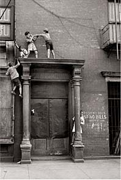

| |
November 15, 2001
|
|||||

Photograph / HELEN LEVITT
The Attacks The New Yorker's
coverage of the terrorist attacks and their aftermath, including
a chronicle of the events of September 11th, a portfolio of photographs,
Art Spiegelman on his cover of the Twin Towers, and other reports
and reflections.
|
It's Still the Economy A conversation with two of the economy's wise
men, Felix Rohatyn and Robert Rubin, moderated by David Remnick,
the editor of The New Yorker.
Beyond Words A selection of texts from The
New Yorker's October 11th benefit,
which featured readings by John Updike, Woody Allen, Don DeLillo,
and others.
|
||||